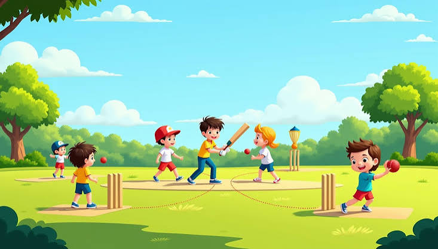

Kids healthcare is essential because children are not just miniature adults; their bodies, minds, and immune systems are still growing and need specialized protection 🩺. Investing in their health early prevents chronic diseases, boosts school performance, and sets them up for a vibrant, successful life 🎒. To support them, we must ensure regular pediatric checkups, stay on track with life-saving immunizations, and provide nutritious meals 🥦. Beyond physical care, creating safe spaces for mental health, limiting daily screen time, and encouraging active outdoor play are vital steps ⚽. Ensuring every child has access to quality healthcare is the greatest investment we can make for a brighter, healthier tomorrow 🌍.
To keep kids healthy and strong, we need a mix of exercises that build endurance, flexibility, and strength 🏃♂️. Swimming is a fantastic full-body workout that builds cardiovascular health and builds endurance safely in the water 🏊. Sports like soccer, basketball, and gymnastics teach teamwork while improving coordination, agility, and bone strength ⚽. For mental focus and flexibility, kids' yoga is perfect for stretching muscles, improving balance, and reducing daily stress 🧘. Simple, unstructured activities like riding a bicycle, jumping rope, or playing tag at the park keep fitness fun and engaging 🚲. Mixing these activities ensures children develop healthy habits, strong bodies, and happy minds for life 🌟.
